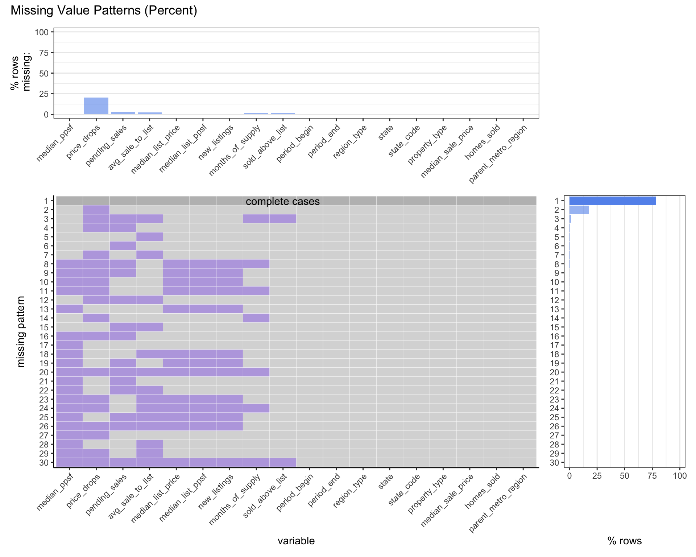
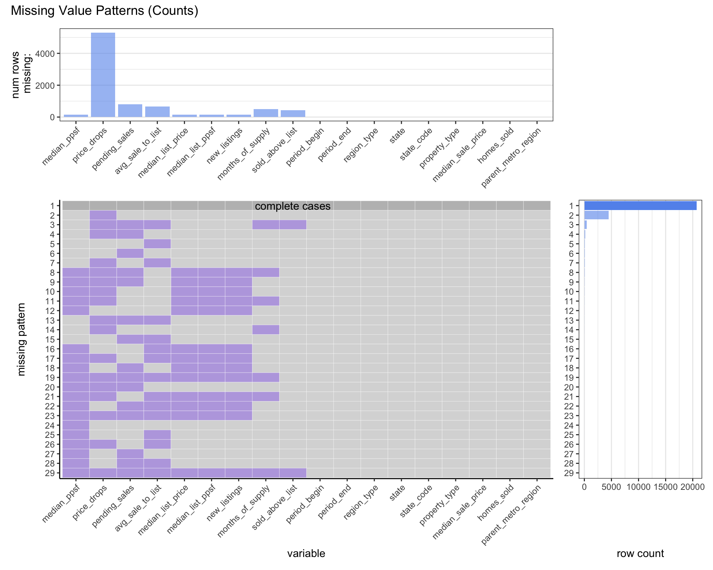
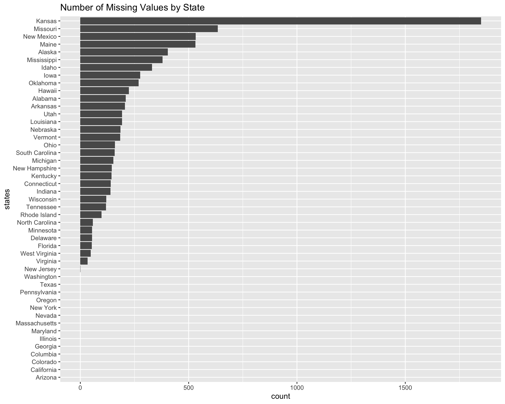

Chapter 4 Missing values
 
As shown on the plots, more than 75% of rows are complete cases. There are 9 variables that have missing values, and the price_drops has the most missing data based on the % rows missing bar plot. We do notice that median_list_price, median_list_ppsf, and new_listings have the same missing pattern. Since new_listings represents the total number of homes with a listing added date during the given time period, median_list_ppsf represents the median price of the most recent listing price, and median_list_ppsf shows the median price of the most recent listing price divided by the total square feet. There are correlations between these three variables, which means missing in one column is likely to be missing in another column. We may use the median or mean value of that variable to fill up those missing data, or we could build a model to predict the value for future data visualization.

As shown on the plots, we found Kansas has most of the counts of missing values among all states in the dataset.